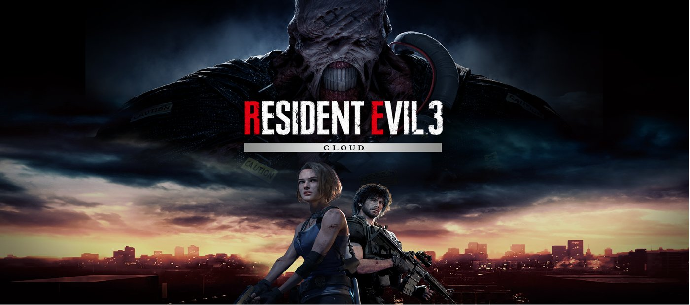

Los creadores de contenido ya analizan las nuevas mecánicas y comparan el mapa con versiones anteriores del juego.
Se espera que la comunidad compita esta semana en los primeros torneos oficiales de la temporada.
La nueva temporada llega con zonas inéditas, un sistema de clima dinámico y vehículos rediseñados. Los jugadores ya reportan cambios notables en el ritmo de las partidas y en los puntos de aterrizaje más populares.
Entre las novedades destaca un pase de batalla con colaboraciones sorpresa y nuevos modos por tiempo limitado durante las primeras semanas de la temporada.